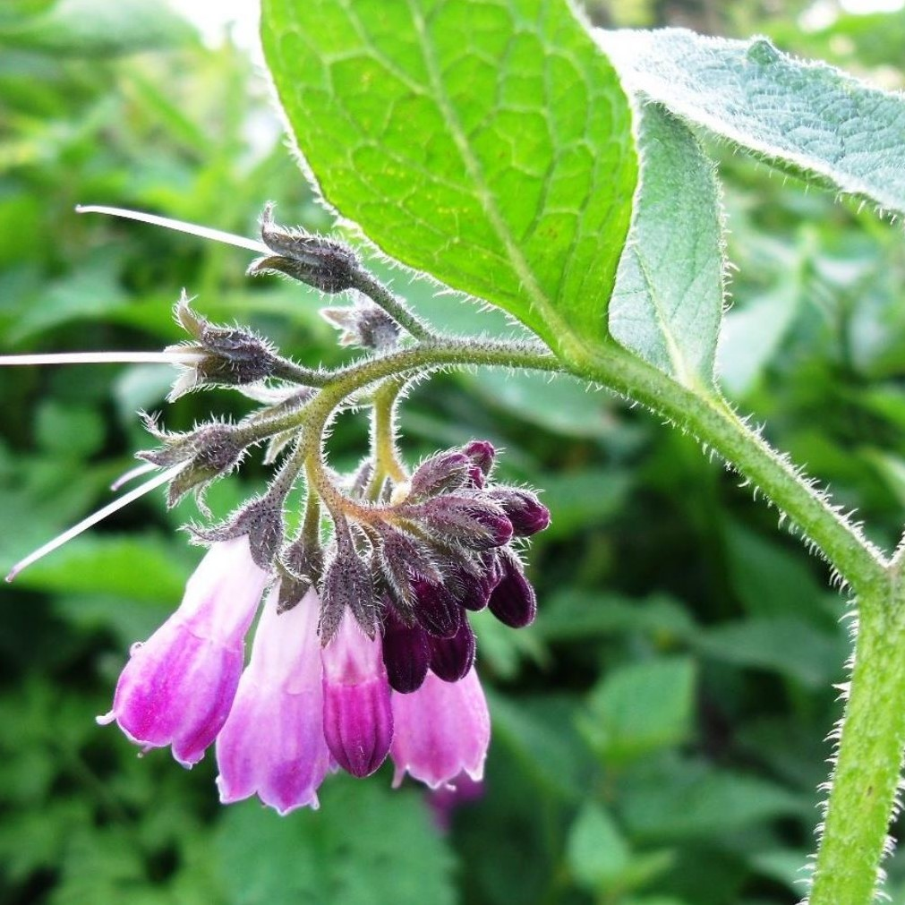

Section A
Pommier Prairie Magic
Comestibilité : Fruit ✔
Période de floraison : Automne
Ce pommier très rustique et très résistant aux maladies est adapté au rude climat des prairies canadiennes.
Il produit une bonne pomme rouge à la chair ferme. On la consomme fraîche, mais c’est également une bonne
pomme de cuisson pour les compotes et les tartes. Les fruits se conservent bien.
Rosier rugueux
Comestibilité : Fleur, fruit ✔
Période de floraison : Juin - Juillet
Cet arbuste indigène très rustique produit des fleurs roses au parfum qui rend tout simplement amoureux.
Les pétales peuvent être macérés dans l’alcool. On obtient une décoction aromatique qui peut servir à faire
des cocktails. Si on est moins olé olé, on peut aussi les sécher pour les tisanes. Les fruits, appelés
églantiers ou cynorrhodons, sont très riches en vitamine C et sont réputés prévenir les petits maux de
l’hiver. On en fait une confiture, qui demande pas mal de travail pour récupérer la chair des fruits
(au centre, il y a des poils urticants qu’on ne souhaite pas retrouver dans notre recette). Mais ça goûte
le paradis - vous serez récompensés!
Cognassier du Japon
Comestibilité : Fruit ✔
Période de floraison : Mai
Le cognassier du Japon est originaire d’Asie. Surtout cultivé pour sa magnifique floraison rouge, il
produit également des fruits, appelés coings, qui ne sont cependant pas les véritables coings (qui sont,
eux, produits par Cydonia oblonga). Malgré toute cette confusion, les fruits du cognassier du Japon
peuvent être utilisés comme substitut des vrais coings et sont cuisinés de la même façon : gelées,
confitures, pâtes de fruits et gâteaux. Rôtis au four, ils se consomment avec des viandes. En Europe de
l’est, ils sont utilisés comme légumes, surtout en soupe. Les fruits du cognassier du Japon sont utilisés
en médecine chinoise, entre autres pour améliorer la digestion et relaxer les muscles et les tendons.
Groseillier « Oregon Champion »
Comestibilité : Fruit ✔
Période de floraison : Mai
Les fruits de ce groseillier restent plutôt verts, mais tirant sur le jaune, lorsqu’ils sont mûrs.
Ils restent sur le plant longtemps tout en devenant de plus en plus sucrés. Ils se consomment frais
ou encore en tarte ou en gelée. Les plants compacts de ce cultivar résistant aux maladies, n’ont que très
peu d’épines et produisent des fruits en abondance en juillet pour au moins une vingtaine d’années !
Fraisier blanc
Comestibilité : Fruit ✔
Période de floraison : Mai - Juin

Lupin indigo
Comestibilité : Aucune ❌
Période de floraison : Juillet- Août
Plante fixatrice d'azote très ornementale avec ses très longs épis de fleurs bleutées. Sa hauteur
peut en faire la vedette d'une section de votre aménagement. Elle ressemble beaucoup au lupin qu'on
voit souvent dans les jardins (qui est du genre Lupinus et non pas Baptisia...), sans attirer les
pucerons comme ce dernier. Une bonne raison de l'y préférer !

Consoude de Russie Bocking 4
Comestibilité : Aucune ❌
Période de floraison : Mai - Juin
La consoude de Russie, c’est peut-être LA plante de la permaculture, et elle n’est même pas
comestible ! On la cultive pour plusieurs autres raisons, notamment pour produire son propre paillis.
Elle est parfaite pour ce rôle, notamment parce qu’elle pousse très rapidement. On peut la tailler
au ras du sol plusieurs fois dans l’été. Elle est un couvre-sol extrêmement efficace par la densité
de son feuillage. Finalement, elle a les mêmes propriétés médicinales que la consoude officinale,
très cicatrisante et pour les maux de la peau, sans le côté terriblement envahissant.
Verveine hastée
Comestibilité : Graine, feuille ✔
Période de floraison : Juillet - Août - Septembre
La verveine hastée est une plante indigène du Québec. Ce n’est pas la verveine citronnée que
l’on retrouve souvent dans les tisanes. On la cultive plutôt pour sa floraison prolongée qui
attire les insectes en fin de saison.
Orpin
Comestibilité : Feuille ✔
Période de floraison : Août - Septembre - Octobre
L’orpin est une plante que l’on voit souvent dans les plates-bandes sans savoir que son
feuillage est comestible. Comme dans la grande majorité des cas, les feuilles jeunes sont
meilleures que les vieilles. La texture est mucilagineuse et le goût très doux - on peut
l’intégrer à n’importe quelle salade dont on cherche justement à atténuer le côté amer. L’orpin
fleurit tard, ce qui en fait un précieux allié pour les insectes pollinisateurs quand les
fleurs se font plutôt rares. Les bouquets de fleurs séchées restent en place tout l’hiver.
Ciboulette
Comestibilité : Feuille, fleur ✔
Période de floraison : Mai - Juin
Un grand classique ! Ma première cueillette à vie. Je me faufilais dans la cour de la
voisine avec une paire de ciseaux pour couper les précieuses feuilles destinées à décorer
l'omelette du dimanche. Quelle joie ! Les feuilles ont un léger goût d'oignons et, ciselées,
s'ajoutent gaiement à une salade, un sandwich, sur une soupe, n'importe où : cette herbe est
passe-partout. Et les fleurs ont le plus joli effet dans la salade ou émiettées sur des
canapés. Chic garanti.
Alchemille
Comestibilité : Fuille, racine ⚠
Mise en garde: Feuilles comestibles, mais âcres
Période de floraison : Juin - Juillet - Août - Septembre
Jolie plante couvre-sol, l’eau tend à former des perles sur son feuillage. Les feuilles
sont comestibles, mais âcres. On les mangera en cas de survie seulement ! L’achemille est
utilisée en herboristerie depuis longtemps, notamment pour le traitement externe des coupures
et des blessures. Elle est traditionnellement utilisée comme tonique utérin et également en
compresse pour raffermir les seins !